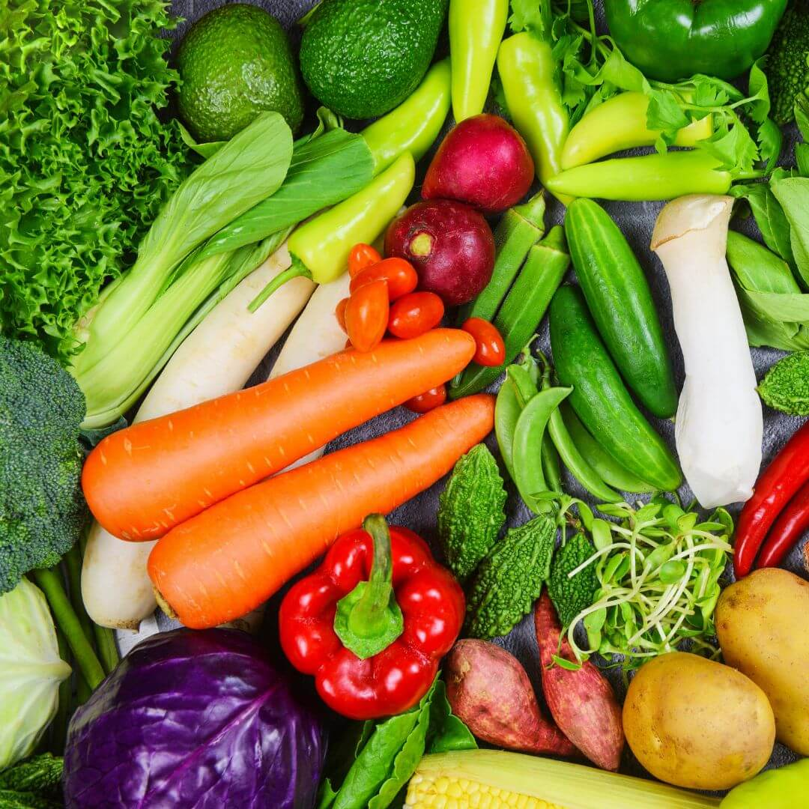

George Lang's Potato Bread Recipe With Caraway Seeds

Easy vegetable broth made right at home.
Ingredients
-
2 Large onion
-
4 - 5 Large Carrots
-
1 Bunch of Celery
-
1 Head of Garlic
-
1 Bunch Fresh Thyme
-
2 Dried bay leaves
-
About 10 whole pepper corns.
Directions
-
Wash all vegetables and the fresh herbs well.
-
Do not peel ANY of the vegetables! The skins will add a beautiful flavor and color to the broth.
-
Prep the vegetables:
-
Quarter the onions.
-
Chop the carrots into 2 to 3 inch pieces.
-
Seperate the celery stalks and chop into 3 to 4 inch pieces.
-
Carefully cut the garlic across the equater so that you cut each bulb in half.
-
The washed herbs are good to go as is.
-
Add all ingredients to a pot.
-
Add enough water to cover all of the vegetables by about an inch.
-
Heat the pot over medium high heat, stirring often to prevent burning, until it reaches a boil.
-
Reduce the heat to maintain a simmer.
-
Cover and simmer for 2 to 3 hours, until the vegetables are very tender and the broth and is fragrant.
-
Carfully remove the vegetables, making sure to strain any retained broth using the back of a spoon.
-
Seperate the broth into smaller containers for storage.
-
Store in the fridge.